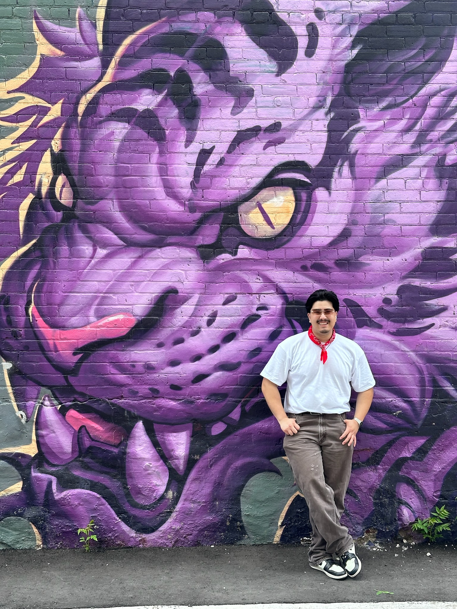

Jeremy Reyes is a passionate and detail-oriented UX/UI Designer who recently graduated with a degree in Web Design & Engineering from Santa Clara University. During his academic journey, Jeremy honed his skills in user-centered design, wireframing, prototyping, and interaction design. With a keen eye for detail and a deep understanding of user behavior, he is dedicated to creating intuitive and visually engaging experiences across digital platforms.
Jeremy's design approach is grounded in empathy, always ensuring that the user is at the heart of every decision. Through extensive research and collaboration, he strives to simplify complex concepts into seamless, accessible interfaces. He is proficient in design tools such as Figma, Adobe XD, and Sketch, and has experience with front-end technologies, allowing him to effectively bridge the gap between design and development.
Passionate about continuous learning and innovation, Jeremy is eager to contribute his fresh perspective and creativity to help shape intuitive, meaningful user experiences in his new role as a UX/UI Designer.
Outside of work, Jeremy enjoys photography, drawing, digital art, and exploring the streets of San Francisco.
Capabilities
Beyond Work